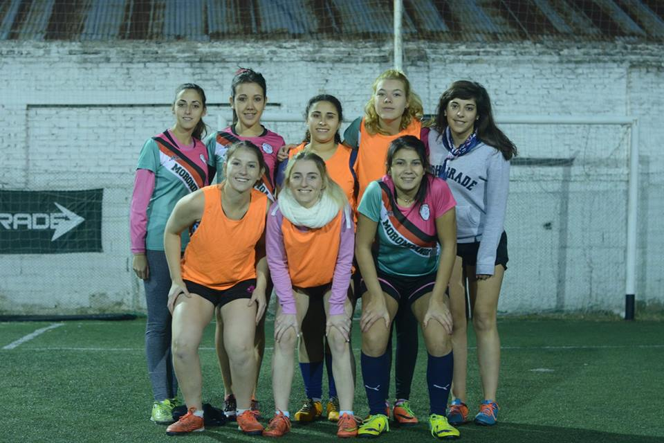

Copa Italia Calcetto
Fiorentina sigue a paso firme
El fin de semana se jugaron los cuartos de final de la Copa Italia Calcetto. En un partido donde las chicas salieron "enchufadas" desde el minuto 0, lograron adueñarse de la pelota y practicamente el partido se disputo en campo rival; mediante mucho toque y tenencia de balon, las chicas intentaban convertir , y lo lograron en los pies de su goleadora Florencia Silva,quien convirtio los dos goles que le dieron la victoria y el pasaje a semifinal.
Copa LFA
Primeros tres adentro
En la tarde noche del domingo, el equipo se enfrentó a Preguntame, por la primer fecha de la Copa LFA, y fue una contundente victoria 4 a 0 para las dirigidas por Marcelo Verdun. En un primer tiempo trabado y de muy pocos tiros al arco por parte de los dos equipos, nos iriamos al descanso 0-0. En el entretiempo el DT meteria do cambios vitales para intentar abrir el marcador, y asi fue ni bien ingreso Florencia Silva pondria el 1-0 a favor de las verdirosa,el segundo fue convertido por Maria Jose Rolando, el 3-0 vendria gracias Micaela Silva y el 4-0 nuevamente gracias a la flamante goleadora Flopy Silva. Este resultado les sirvio para tomar confianza y empezar con el pie derecho.
Copa Cosa de Serranas
Morondanga empezo con el pie derecho
El domingo por la tarde el equipo femenino se enfrentaria a las magicas en un encuentro que les sento muy bien. Los goles llegarian rapidamente para morondanga imponiendose por 4 tantos a 1 uno sobre las magicas. Los goles fueron convertidos por Florencia Silva , Maria jose Rolando, Francina Mandrini y Micaela Silva. Con este resultado las chicas estan un paso mas cerca del ascenso a la categoria A.
Copa LFA
Se salvaron del descenso
El pasado miercoles por la noche el plantel femenino de Morondanga se enfrento a leña para el carbon para disputar lo que seria la fecha ascenso/ descenso , el partido fue muy parejo y como resultado las chicas empataron 3 a 3 con goles de Florencia Silva x2 y Maria Jose Rolando. Con este resultado se mantienen firmes en la primer categoria y empiezan la fase campeonato.